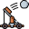

CATAPULT
Estadisticas Básicas
 Daño base Daño base |
 Armadura Armadura |
 Probabilidad restos Probabilidad restos |
 Probabilidad volver a atacar Probabilidad volver a atacar |
 Santificable Santificable |
|---|---|---|---|---|
| 250 | 1200 | 65 | 12 | Sí |
Estadisticas Plus
| Tecnologia de armadura | Tecnologia de ataque | Experiencia de armadura | Experiencia de ataque | Santificacion de armadura | Santificacion de ataque |
|---|---|---|---|---|---|
| 5 | 5 | 4 | 4 | 7 | 7 |
Costes
 Coste de comida Coste de comida |
 Coste de madera Coste de madera |
 Coste de hierro Coste de hierro |
 Coste de mana Coste de mana |
|---|---|---|---|
| 0 | 4000 | 500 | 0 |
Volver Atrás